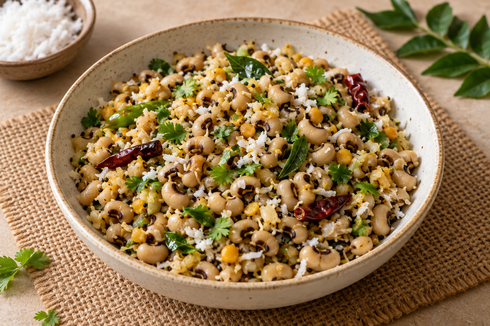
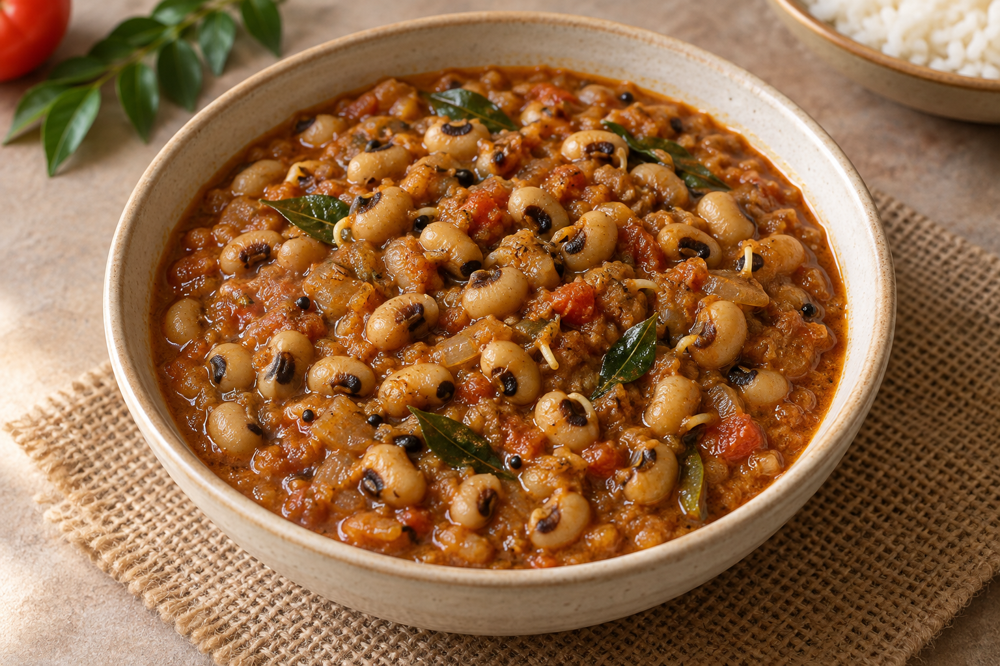
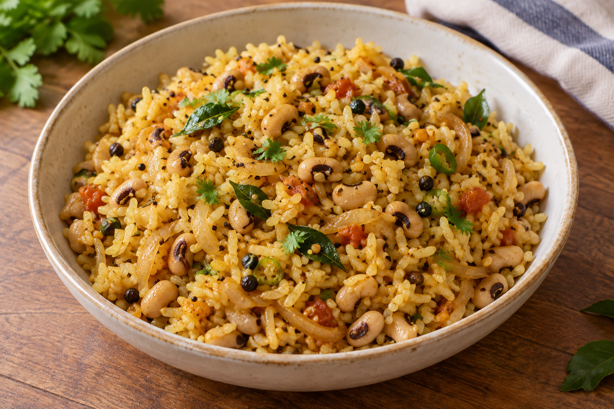
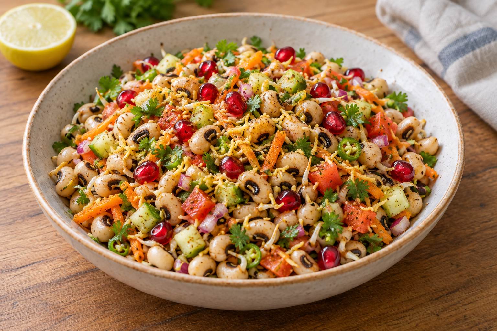

Recipe 01
Sprouted Karamani (Cowpeas) Sundal

Ingredients
- 2 cups sprouted karamani (cowpeas)
- 1–2 tsp coconut oil
- ½ tsp mustard seeds
- 1 tsp urad dal
- 1 tsp channa dal
- 1–2 dried red chillies, broken
- 1 green chilli, chopped
- A pinch of asafoetida (hing)
- Curry leaves
- ¼ tsp turmeric powder (optional)
- 2–3 tbsp freshly grated coconut
- Salt as required
- Lemon juice (optional)
- Coriander leaves
- Water to cover the sprouts
Preparation
- Put the sprouted karamani into a pressure cooker.
- Add enough water to cover them and a little salt.
- Pressure-cook until tender but still holding their shape.
- Drain excess water completely.
Method
- Heat a kadai on medium heat and add the coconut oil.
- Add mustard seeds, urad dal, channa dal, broken dried red chillies, chopped green chilli, curry leaves and a pinch of hing.
- Add the cooked and drained sprouted karamani.
- Add turmeric, if using, and salt as required.
- Add freshly grated coconut. Mix gently and cook for about 1 minute.
- Garnish with coriander leaves and add lemon juice, if using.
Recipe 02
Sprouted Karamani (Cowpeas) Masala Curry

Ingredients
For the sprouts
- 2 cups sprouted karamani (cowpeas)
- Water as needed
- ½ tsp salt
For the masala
- 2 tbsp oil
- ½ tsp mustard seeds
- ½ tsp cumin seeds
- 1 medium onion, finely chopped
- 2 medium tomatoes, chopped
- 1-inch piece ginger
- 4 cloves garlic
- 1 green chilli
- 1 sprig curry leaves
- ¼ tsp turmeric powder
- 1 tsp chilli powder
- 1½ tsp coriander powder
- ½ tsp cumin powder
- ½ tsp garam masala
- Salt to taste
- 2 tbsp grated coconut
- ½ tsp fennel seeds
Prepare the sprouts
- Wash the sprouts well.
- Put them in a pressure cooker with enough water and a little salt.
- Cook until the sprouts are soft but still retain their shape.
- Drain and keep aside.
Prepare the masala
- Heat the oil in a kadai. Add mustard seeds, cumin seeds and curry leaves.
- Add onion and sauté until translucent.
- Add ginger, garlic and green chilli. Cook for 1–2 minutes.
- Add chopped tomatoes, turmeric, chilli powder, coriander powder, cumin powder and salt to taste.
- Grind the coconut and fennel seeds with 2–3 tbsp water into a smooth paste.
- Add the paste to the masala and cook for 2 minutes.
- Add the cooked sprouts and mix gently so they don’t break.
- Add approximately ½–1 cup water, depending on how thick you want the curry.
- Add garam masala. Cover and simmer for 5–7 minutes.
Recipe 03
Sprouted Karamani (Cowpeas) Sadham (Rice)

Ingredients
- 2 tsp oil
- ½ tsp mustard seeds
- ½ tsp black pepper
- 1 tsp channa dal
- 1 tsp urad dal
- 1 tsp cumin seeds
- 3 onions, sliced
- 4 garlic cloves, crushed
- 2–3 green chillies
- 2 tomatoes
- Sprouted cowpeas
- Curry leaves
- ½ tsp turmeric powder
- ½ tsp cumin powder
- 1 tsp chilli powder
- Soaked rice
- Water as required
- Salt as required
- Ghee
- A handful of coriander leaves
Method
- Heat the oil in a pressure cooker.
- Add mustard seeds, channa dal, urad dal, black pepper and cumin seeds.
- Add sliced onions and sauté.
- Add crushed garlic, green chillies and curry leaves.
- Add the sprouted cowpeas and mix well.
- Add turmeric powder, cumin powder and chilli powder.
- Mix well and add the tomatoes.
- Add water as required, then add the soaked rice.
- Add salt, ghee and a handful of coriander leaves.
- Close the cooker lid and pressure-cook for 2–3 whistles.
Recipe 04
Sprouted Cowpeas Chaat

Ingredients
- 1 cup sprouted cowpeas (karamani)
- 1 small onion, finely chopped
- 1 small tomato, finely chopped
- ½ cup cucumber, finely chopped
- ½ cup carrot, grated
- 1 green chilli, finely chopped
- 2 tbsp coriander leaves, finely chopped
- 1 tbsp lemon juice
- ½ tsp chaat masala
- ¼ tsp roasted cumin powder
- ¼ tsp black salt
- Salt as needed
- 2 tbsp pomegranate seeds
- 2 tbsp sev (optional)
Method
- Wash the sprouted cowpeas well. Steam or pressure-cook them.
- Add onion, tomato, cucumber, carrot, green chilli and coriander. Mix gently.
- Add chaat masala, roasted cumin powder, black salt and regular salt.
- Pour in the lemon juice and mix everything well.
- Top with pomegranate seeds and sev, if using.